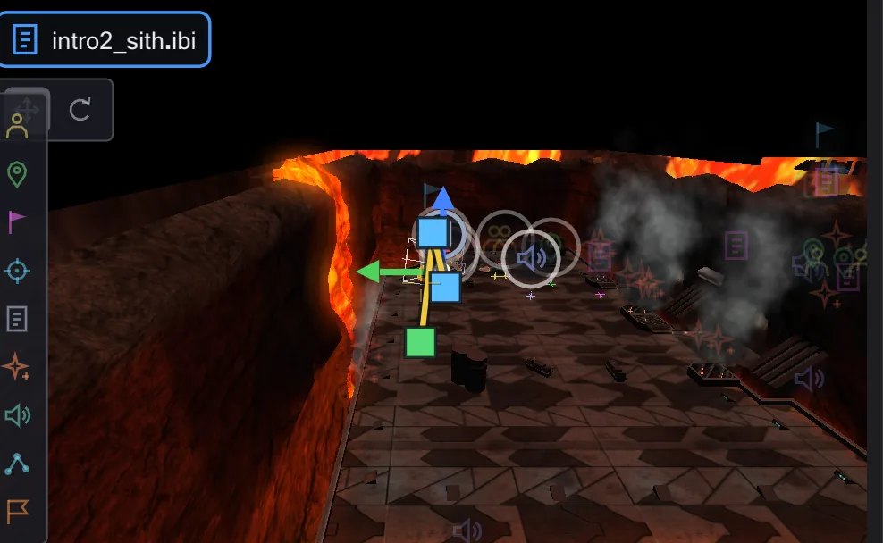

Entities
Alles in einer Karte, das ein Skript ansprechen kann - Figuren, Laufziele, Kameramarken, Auslöser, Schiffe -, ist eine Entity. Wählen, ändern, verschieben, neue setzen.

Die Entity-Liste#
Die linke Spalte ordnet die Entities in Gruppen - Kameramarken, Laufziele, Blickziele, Figuren, Skriptstarter, Effekte, Klang, Bewegliches, Zerbrechliches, NPC-Wegpunkte. Das Auge blendet eine Gruppe in der Ansicht aus (Alt+Klick: nur diese zeigen), das Suchfeld filtert nach Name oder Klasse. Klick wählt, Doppelklick fliegt hin, Rechtsklick fügt einen Befehl für sie ein: Laufziel, Blickziel, affect-Block, Kamera zu dieser Marke.
In der Ansicht wählen#
Eine Marke, eine Figur oder ein Modell anklicken wählt es; Strg/Umschalt+Klick nimmt weitere dazu; ein über leere Fläche gezogener Rahmen wählt alles darin. Darüberfahren zeigt einen Kasten und den Namen. Die Leiste unter der Karte sagt, wie oft die gewählte Entity im Skript vorkommt, mit Knöpfen, die zu diesen Zeilen springen.
Verschieben und Drehen#
Eine kleine Leiste in der Ecke der Ansicht schaltet das Gizmo zwischen Verschieben und Drehen. Im Verschieben ziehst du die Entity über den Boden oder an einem der farbigen Pfeile; das in der Leiste eingestellte Raster rastet, Strg schaltet es beim Ziehen aus - ohne Raster rastet Strg einen Pfeilzug auf 8 Einheiten. Im Drehen gibt es Ringe (Strg: 15-Grad-Schritte): blau dreht links und rechts; Schiffe und Modelle haben dazu grün (nicken) und rot (rollen); Figuren nur den blauen, weil das Spiel für sie nur angle kennt. Alt+Ziehen kopiert zuerst. Mehrere gewählte Entities ziehen und drehen als Gruppe.



Der Inspektor#
Unter der Liste zeigt der Inspektor die gewählte Entity: ihre Klasse mit einer Beschreibung aus dem Spielcode, Name, Position, Boden (wie hoch die Füße über dem Boden stehen - rot, wenn darin) und Blickrichtung (Grad), die Spawnflags als Kästchen und alle übrigen Keys als Felder. Skriptfelder haben Öffnen, NPC_type hat eine Suche über alle NPCs des Spiels. Die Symbolleiste fliegt hin, setzt sie Auf den Boden, dupliziert, löscht, animiert (Mover animieren und ROFF-Dateien) und zeigt Alle Schlüssel (roh). Änderungen an Entities haben ihr eigenes Rückgängig, solange die Maus über der Karte oder der Liste ist.
Neue Entities setzen#
Die Kacheln am linken Rand der Ansicht setzen die üblichen Arten: Figur, Laufziel, Kamera-/Blickmarke, Blickziel, Skriptstarter, Effekt, Klang, NPC-Wegpunkt, Spielerstart. Kachel anklicken, dann in die Ansicht klicken - oder die Kachel in die Ansicht ziehen; Umschalt setzt mehrere. + Entity über der Liste und ein Rechtsklick in der Ansicht (Neue Entity hier) bieten jede Klasse an. Der Knopf Raster rastet auf 8, 16, 32 oder 64 Einheiten.